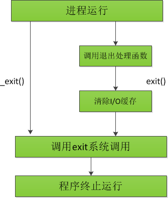

exit()与_exit()的区别
exit()和_exit()这两个函数都是用于函数退出，但这两者有一些细微的差别，在exit()函数里会调用_exit()函数。

_exit() 函数：直接使进程停止运行，清除其使用的内存空间，并清除其在内核的各种数据结构
exit() 函数：在_exit()的基础上做了一些小动作，在执行退出之前还加了若干道工序。
exit()函数与 _exit() 函数的最大区别在于exit()函数在调用exit 系统调用前要检查文件的打开情况，把文件缓冲区中的内容写回文件。也就是图中的“清理I/O缓冲”。
_exit()
|
-
status参数定义了进程的终止状态，父进程可调用wait()以获取该状态 status虽为int型，但仅有低8位可为父进程所用，其值范围为0~255- 如果取值大于128将在shell脚本中引发混乱，原因是：当以信号（single）终止一个命令时，shell会将变量
$?置为128与信号之和。如果这与进程调用_exit()时所使用的相同status值混杂起来，将令shell无法区分。
- 如果取值大于128将在shell脚本中引发混乱，原因是：当以信号（single）终止一个命令时，shell会将变量
- 终止状态值的意义：
- 为0：表示进程正常终止
- 非0：进程因异常而退出，具体值所代表的意思并无明确规定
- SUSv3规定了两个常量;
-
EXIT_SUCCESS(0) -
EXIT_FAILURE(1)
-
- 调用
_exit()的程序总会成功终止，即_exit()从不返回
exit()
程序一般不直接调用_exit()，而是调用库函数exit()
|
exit()执行的动作：
- 调用退出处理程序（通过
atexit()和on_exit()注册的函数），其执行顺序与注册顺序相反 - 刷新stdio流缓冲区
- 使用由status提供的值执行
_exit()系统调用
_exit()是UNIX专属的系统调用
exit()是属于标准C语言函数库的，所有的C语言实现都支持
程序的另一种终止方法是从main()函数返回（return），或者或明或暗地一直执行到main()函数的结尾处（尾部无return）。
执行return n等同于执行对exit(n)的调用，因为调用main()的运行时函数会将main()的返回值作为exit()的参数。
存在一种情况，从
main()函数中返回与调用exit()并不相同：如果在退出的处理过程中所执行的任何步骤需要访问main()函数的本地变量，那么从main()函数中返回会导致未定义的行为。
执行未指定返回值的return，或是无声无息地执行到main()函数结尾，同样会导致main()的调用者执行exit()函数：
- C89标准未就上述情况下的行为进行定义，程序可以返回任意的status值
- C99标准则要求，执行至
main函数结尾处的情况应该等同于调用exit(0)
代码示例
程序一：对比是否清空缓冲区
|
|
程序二：对比return、exit、_exit退出时的处理
|
|
|
参考
Linux/Unix系统编程手册（上）